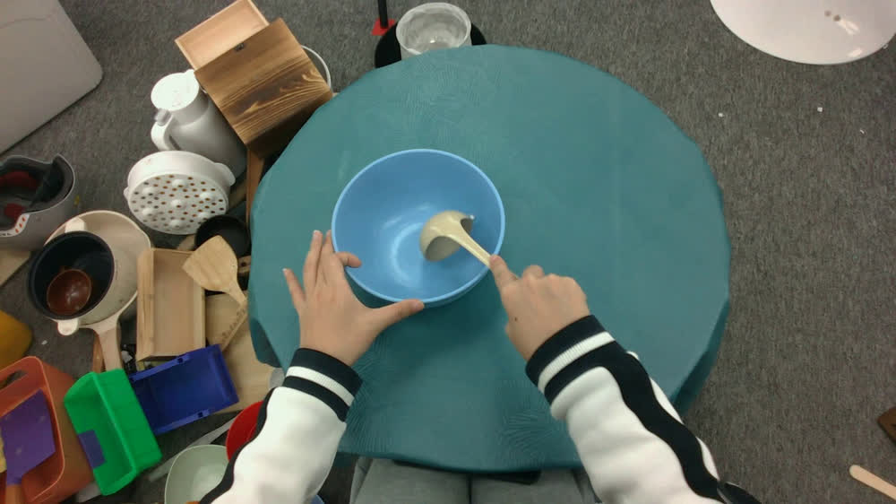

原文与候选代码分开。
论文 A3 描述固定物体轨迹优化手部。候选代码在特定任务额外执行 touch-table grounding；该分支单列为 Grounding＋A3，另提供 paper-fixed-objects 严格对照。
EgoMatrix 独立复现实验室。以少量 TACO 完整序列验证手—物三维轨迹、接触几何、物理一致性，并追踪从视觉重建到机器人策略的完整链路。

选择序列，查看各阶段输出；每一帧与原视频使用同一时间轴。
左侧原始 Ego RGB，右侧重建 3D 场景。旋转、缩放、切换阶段，观察手物相对运动。
保存的原生 5 列视频，展示同帧 RGB 和 A1 / Scene / A2 / A3。不同方法变体分开保留。
真实原 RGB + A1 / Scene / A2 / A3，249 帧。所有结果保持同一原视频时钟。
同一视频、同一 GT 评分协议，比较手物相对运动、接触穿透和自由物理稳定性。
| 阶段 | CDh mm | 腕物速度误差 mm/s | Dpen mm | SD mm |
|---|
Retargeting 已产生完整双手关节和手腕参考轨迹，网站上方可直接播放机器人 3D 动作。PPO 的训练与仿真代码也确实运行，但目前 checkpoint 对应的 frame 0 rollout 在第 9 个控制步因跟踪失败而终止。完整参考轨迹不是训练成功的机器人策略。
优先完成论文链路；发现与论文明确描述不一致的步骤后，使用少量完整序列作通用组件修复。
RGB、MANO、相机与物体形状/姿态初始化
ALL SEQUENCES COMPLETE几何与场景约束；当前教师深度已对齐
RAW / ALIGNED TEACHER多起点候选、DP、时序和安全优化
FULL BUDGET · RECORDEDHACO 接触、MANO 局部优化与物理评分
PAPER-FIXED VARIANT两手各 12 关节，完整 60 Hz 参考轨迹，URDF FK 对账
FULL-LENGTH REFERENCE READYRetarget 与 Isaac Sim PPO 评估
TRAINED CHECKPOINT · TASK FAILED论文 A3 描述固定物体轨迹优化手部。候选代码在特定任务额外执行 touch-table grounding；该分支单列为 Grounding＋A3，另提供 paper-fixed-objects 严格对照。
论文相对深度使用对齐后的 MoGe 深度。新分支 Scene / A2 使用已生成的 aligned-depth 输入，历史 raw-depth 结果保持可追溯。
勺柄末帧朝向、指形、刷体外轮廓存在明显偏差。Dpen 改善和相对速度改善可能方向不同；原适用安全检查及未定义边范围分别列示。
TACO 原视频按原帧与时间轴保留；文中指标引用独立 evaluation；不使用 GT 挑模型、调优化参数或生成视觉演示。